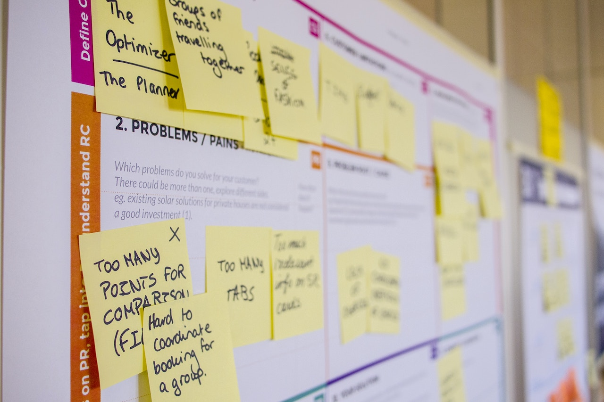

Agile Manifiesto
What is Agile?
Agile is the ability to create and respond to change. It is a way of dealing with, and ultimately succeeding in, an uncertain and turbulent environment.

The 4 Values of Agile
- Individuals and interactions over processes and tools.
- Working software over comprehensive documentation.
- Customer collaboration over contract negotiation.
- Responding to change over following a plan.

Advantages of Agile
- Less predictable.
- Greater demands on developers and clients.
- Experienced team members.
Disadvantages of Agile
- Less predictable.
- Greater demands on developers and clients.
- Experienced team members.
References
https://www.agilealliance.org/